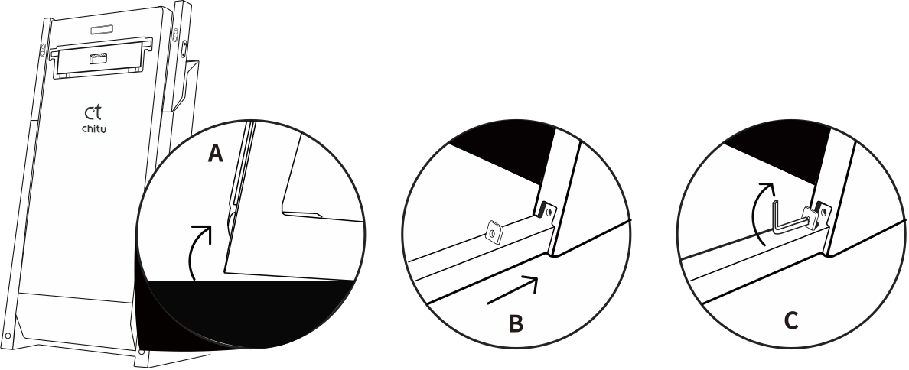
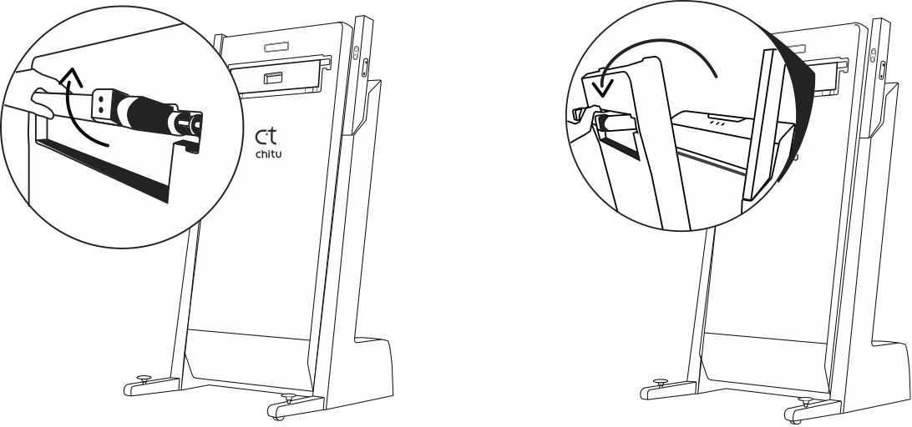
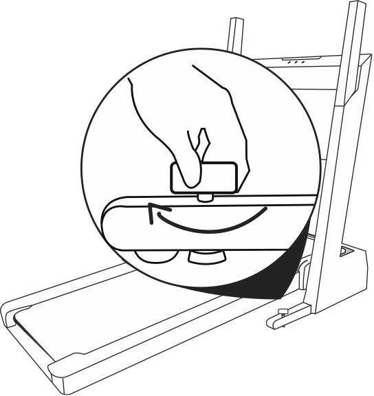

使用教程及FAQ
安装说明
1.准备安装
取出跑步机后请先安装完成再移动至指定位置，否则可能会因为跑步机两侧距离墙壁过近，导致安装过程中扶手无法顺利放下。
2.安装脚管
将跑步机拉起一个倾角，注意角度不要过大以免翻倒;将脚管沿底部安装口插入，用内六角扳手固定脚管。
3.放下跑台
拉起底部支架，根据底部支架将跑台放下，跑台会自动缓慢降落。收回底部支架时，请先外提再折叠归位。
4.放下扶手
1. 取工具包中T型六角工具拧松扶手内侧的花生形凹槽的螺母（左扶手逆时针拧松，右扶手顺时针拧松）;
2.将花生形凹槽中的螺母由底部移到顶部;
3.向外侧旋转放下扶手;
4.将花生形凹槽中的螺母由顶部移到底部;
5.拧紧花生形凹槽中的螺母，并拔下T型六角工具（左扶手顺时针拧紧，右扶手逆时针拧紧）。
5.固定脚垫
将跑步机位置摆放好后，取上一步骤中的T型六角工具插入脚管上的螺丝孔并顺时针旋 转直至脚垫紧贴地面。如有需要移动跑步机，请移动前先逆时针旋松脚垫。 建议平时使用时，将T型六角工具放置在脚管上的这个螺丝孔中。 至此跑步机已安装完成。
功能介绍
使用教程
1.下载Gfit App
扫描下方二维码下载App。
2.激活跑步机
确认跑步机处于激活状态（屏幕是亮的）并打开手机蓝牙。
3.绑定跑步机
打开Gfit APP点击首页【绑定跑步机】按钮，搜索到跑步机后，点击【立即绑定】。
4.解除绑定
进入Gfit APP点击底部【我】，找到【跑步机】，点击【解除绑定】即可；也可以在这个页面重新绑定跑步机。
5.连接蓝牙音箱
蓝牙音箱需单独连接；请在手机【设置】-【蓝牙】中搜索并选择【赤兔蓝牙音箱】进行连接。
常见硬件问题
Q1 跑步机尺寸是多少？
跑步机展开尺寸：1800*840*1320mm；折叠尺寸:760*840*1560mm，完全折叠后占地面积约0.5平米。
Q2 跑步机最大承重是多少？
赤兔Pro跑步机最大承重是120kg，跑步机最大承重不等于最大体重，建议在120kg以下人群使用。
Q3 跑带的宽度和厚度分别是多少？
赤兔Pro跑步机跑带宽度是51cm，跑带厚度是2.3mm 。
Q4 跑步机速度和坡度范围分别是多少？
赤兔Pro跑步机速度范围：1~16km/h；坡度范围：-6~10档。
Q5 如何保养／加油跑步机？
赤兔Pro跑步机使用的是免加油跑带，只要正常使用，不需要额外保养。
常见软件问题
Q1 在哪下载Gfit app？
微信搜索公众号“Gfit",关注微信公众号“Gfit运动”，点击公众号底部App下载按钮，即可下载最新版本的Gfit；
Q2 怎么连接跑步机？
在跑步机开机的情况下按以下步骤操作：
第一步：打开手机蓝牙；
第二步：进入Gfit 点击首页底部按钮“绑定跑步机”，在搜索结果的弹窗上点击绑定；
第三步：听到语音播报“跑步机连接成功”后即可使用Gfit启动跑步机
Tips:
一台跑步机只能同时被一个手机蓝牙连接,如果无法搜索到跑步机，请先将其他手机Gfit退出，或者重启跑步机。
Q3 语音控速怎么用？
第一步：到“我”-“设置”-“语音控制”里打开该功能；
第二步：进入自由跑，使用语音控速
Tips:
语音控速只对“自由跑”里的“距离目标”、“时间目标”、“不设目标”有效，使用时请保持手机网络通畅，尽量使用标准的普通话对手机发出清晰的控速语音。
Q4 体脂称怎么用？
第一步：打开“我”-“智能配件”-“gfit智能体脂称”页面，点击“现在去称一称”按钮，进入称重页面
第二步：赤脚上称，等待App读取体脂称数据
Q5 怎么更换课程？
第一步：首页点击今日课程时长、里程的数字，进入课程详情页面；
第二步：点击课程详情右侧的全部课程按钮；
第三步：在全部课程中选择一个新课程即可替换当前课程